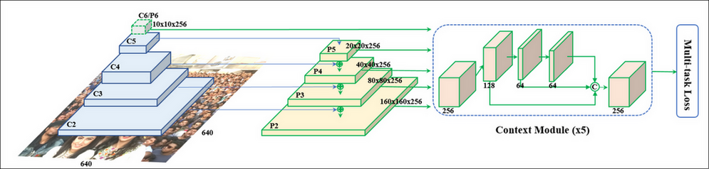

RetinaFace
Table of Contents
1. RetinaFace
1.1. Overview
RetinaFace 是一个 face detection 模型, 它的要点是 multi-task learning.
一般 face detection 的目标是:
- 检测出 class (face or background)
- 检测出 bbox
RetinaFace 的改进是通过把 landmark 做为辅助的目标能提高性能.
1.2. Network

retinaface 实际上就是一个标准的 object detection 网络:
- 前面是一个 Feature Pyramid Networks
- 使用 resnet 或 mobilenet 做 backbone, 并取出其中某些层 c2~c6
- 用 1x1 conv 变成统一的 channel, 例如图中的 p2~p6, 大小分别为 160x160x256, 80x80x256, …, 10x10x256, 用来对应原图上不同尺度的 anchor
- \(p_n = p_n+ upsample(p_{n-1})\)
- 每个 feature 都通过一个 Context Module (SSH, https://arxiv.org/pdf/1708.03979.pdf) 做为一个变换, 这个变换会保持输入输出尺寸不变
把所有 feature 拼起来做为 neck
例如 10x10x256, …, 160x160x256 拼起来变为 34100x256, 表示对于 34100 个点的数据
- 接上不同的 detection head
loc head
通过一个 conv2d(2x4, 1x1) 的卷积把 256 维的 feature 变为 2x4, 表示一个点对应的两个 anchor 的坐标
cls head
conv2d(2x1, 1x1), 表示一个点对应两个 anchor 的 cls
landmark head
conv2d(2x5x4, 1x1), 表示一个点对应两个 anchor 的 5 个 landmark 的坐标
1.2.1. Context Module
https://arxiv.org/pdf/1708.03979.pdf 2017/11
这里参考了 SSH (Single Stage Headless) 的 context module, 所谓 context module, 是加入更大的卷积 (例如 5x5, 7x7) 扩大感受野.
retinaface 的 context module 是:
- mxmx256 通过 conv2d(128, 3x3) 变为 mxmx128
- mxmx128 再通过 conv2d(64, 3x3) 变为 mxmx64
- mxmx64 再通过 conv2d(64, 3x3) 变为 mxmx64
- 三次输出 concat 在一起又变回 mxmx256
1.3. Sample
假设:
- 输入为 160x160
- 使用 resnet50 做 backbone
- fpn 使用三个不同的尺度: 8, 16, 32
- 每个点有两个不同大小的正方形 anchor
1.3.1. model
class RetinaFace(nn.Module): def __init__(self, cfg = None, phase = 'train'): backbone = models.resnet50(pretrained=cfg['pretrain']) # layer2 输出为 (512, 20, 20) # layer3 输出为 (1024, 10, 10) # layer4 输出为 (2048, 5, 5) # 所以这里只用了三种尺度的 feature map self.body = _utils.IntermediateLayerGetter(backbone, {'layer2': 1, 'layer3': 2, 'layer4': 3}) self.fpn = FPN(in_channels_list, out_channels) self.ssh1 = SSH(out_channels, out_channels) self.ssh2 = SSH(out_channels, out_channels) self.ssh3 = SSH(out_channels, out_channels) self.ClassHead = self._make_class_head(fpn_num=3, inchannels=256) self.BboxHead = self._make_bbox_head(fpn_num=3, inchannels=256) self.LandmarkHead = self._make_landmark_head(fpn_num=3, inchannels=256) def forward(self,inputs): # backbone # out[1].shape=(512, 20, 20) # out[2].shape=(1024, 10, 10) # out[3].shape=(2048, 5, 5) out = self.body(inputs) # FPN # fpn[0].shape=(256, 20, 20) # fpn[1].shape=(256, 10, 10) # fpn[2].shape=(256, 5, 5) fpn = self.fpn(out) # SSH # SSH 的输出尺寸不变 feature1 = self.ssh1(fpn[0]) feature2 = self.ssh2(fpn[1]) feature3 = self.ssh3(fpn[2]) features = [feature1, feature2, feature3] # 这里并没有把 feature concat 在一起再用 detecion head, 而是先分别用 # detecion head 后再 concat 起来 # bbox_regressions.shape=(1050, 4), 因为每个点有两个 anchor, (400+100+25) * 2 = 1050 bbox_regressions = torch.cat([self.BboxHead[i](feature) for i, feature in enumerate(features)], dim=1) classifications = torch.cat([self.ClassHead[i](feature) for i, feature in enumerate(features)],dim=1) ldm_regressions = torch.cat([self.LandmarkHead[i](feature) for i, feature in enumerate(features)], dim=1) output = (bbox_regressions, classifications, ldm_regressions) return output
1.3.2. anchor
class PriorBox(object): def __init__(self, cfg, image_size=None, phase='train'): super(PriorBox, self).__init__() # min_size 代表了三种尺度下两个 anchor 的大小, level 0 最小, level 2 最大 self.min_sizes = [[4, 8], [16, 32], [64, 128]] self.steps = [8, 16, 32] self.image_size = image_size # 这里的 feature_maps 与网络输出的 feature map 尺寸一致 self.feature_maps = [[ceil(self.image_size[0]/step), ceil(self.image_size[1]/step)] for step in self.steps] def forward(self): anchors = [] for k, f in enumerate(self.feature_maps): # 针对每个 level 的 feature map min_sizes = self.min_sizes[k] for i, j in product(range(f[0]), range(f[1])): # 针对 feature map 的每个点 for min_size in min_sizes: # 针对每个点的两个 anchor 计算 center 和 长度, 与标准 ssd 不 # 同的是, 所有 anchor 都是正方形 s_kx = min_size / self.image_size[1] s_ky = min_size / self.image_size[0] dense_cx = [x * self.steps[k] / self.image_size[1] for x in [j + 0.5]] dense_cy = [y * self.steps[k] / self.image_size[0] for y in [i + 0.5]] for cy, cx in product(dense_cy, dense_cx): anchors += [cx, cy, s_kx, s_ky] # 输出为 (1050, 4) output = torch.Tensor(anchors).view(-1, 4) return output
1.3.3. label
与 SSD 相同, 也会通过 encoder/decode 转换为相对于 anchor 中心的坐标
1.3.4. loss
与 ssd 相同, 但加上了一个针对 landmark 的 regression loss
Backlinks
Object Detection (Object Detection > RetinaFace): RetinaFace